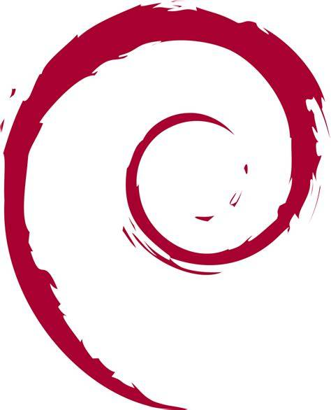

Debian:

Ah o Debian... Minha distro Linux favorita e ainda por cima a que mais dá liberdade possível, o Debian
é uma distro bem antiga, ele é famoso porque a maioria das distros Linux são baseadas nele, por exemplo o
Ubuntu e o Linux Mint, ele também é famoso por sua estabilidade e confiabilidade, além de ser usado em muitos
servidores.
Informações principais:
Gerenciador de pacotes: APT (Advanced Package Tool) e sim os pacotes são testados e estáveis.
Filosofia: Software livre e prioritário (Apesar de permitir adicionar repositórios proprietários com software proprietário
se necessário.)
Dificuldade: Moderada e fácil.
Vantagens:
1) Extremamente estável
2) Grande comunidade e excelente documentação oficial
3) Base para muitas distros Linux famosas como Ubuntu, Linux Mint, Pop!_OS
Desvantagens:
1) Não é rolling release como o Arch
2) Menos "Divertido" para quem quer sempre os softwares recentes (Pois é em algumas distros os pacotes podem ser
antigos).
3) Instalação básica e vem com menos software moderno por padrão (Mas ainda é possível instalar.)